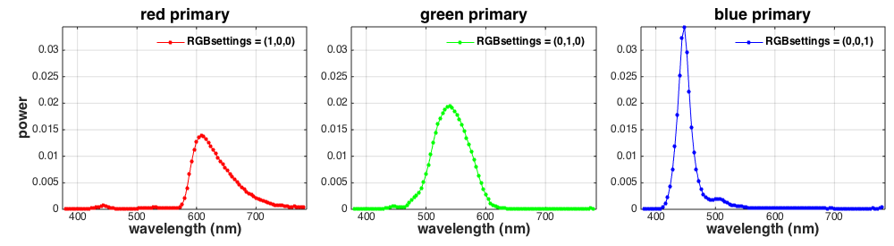
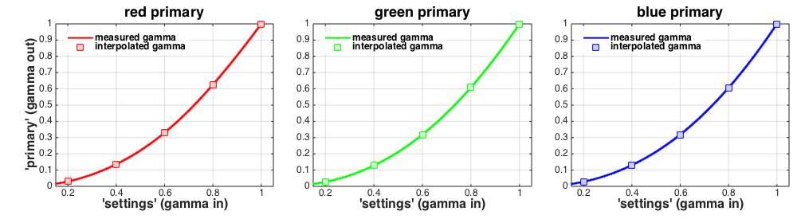
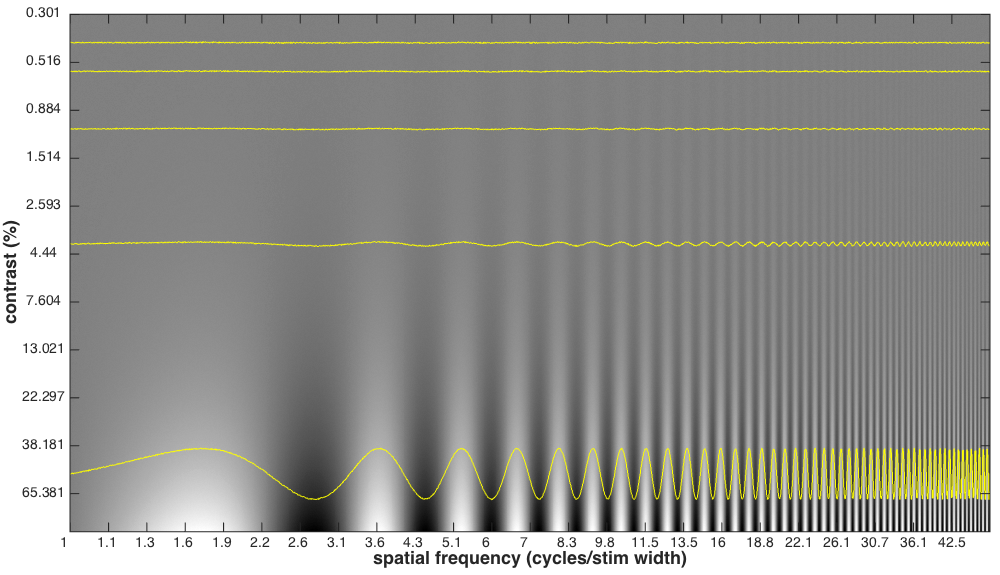
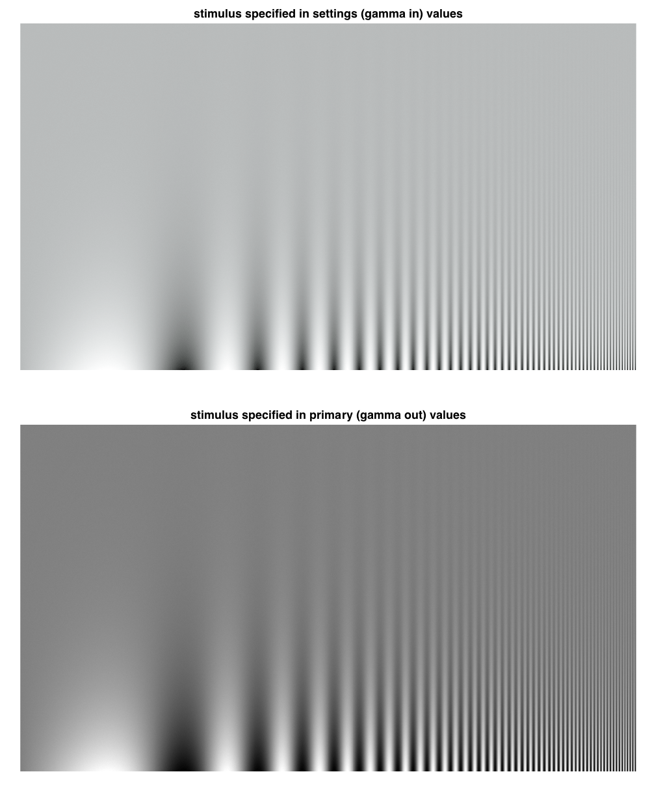

Contents
- Initialize state
- Load a calibration file (generated by running OOC_calibrateMonitor)
- Instantiate a @CalStruct object that will handle controlled access to the calibration data.
- Print some calibration information
- Retrieve the wavelength sampling that was used to take the measurement
- Retrieve the measured spectra of the display's primaries.
- Plot the spectra
- Retrieve the gamma tables (raw and interpolated)
- Plot the gamma tables
- Load desired stimulus. This is specified in primary values, i.e. gamma out values
- Compute stimulus to be delivered to the frame buffer. This is in settings values, i.e. gamma in
- Plot the gamma-in and gamma-out versions of the stimulus
- Check that the stimulus is indeed linearized
function LinearizationTutorial
% % 11/17/2014 npc Wrote it. %
Initialize state
close all; global figNum figNum = 0;
Load a calibration file (generated by running OOC_calibrateMonitor)
Specify the calibration file to load
calFileName = 'ViewSonicProbe'; % Load the most recent entry calStruct= LoadCalFile(calFileName);
Instantiate a @CalStruct object that will handle controlled access to the calibration data.
[calStructOBJ, ~] = ObjectToHandleCalOrCalStruct(calStruct);
% Clear the imported calStruct. From now on, all access to cal data is via the calStructOBJ.
clear 'calStruct';
Print some calibration information
DescribeMonCal(calStructOBJ);
Calibration: * Computer: nicolas's Manta, 10.9.4 * Screen: 2 * Monitor: NicolasViewSonic * Video driver: object-oriented calibration * Dac size: 8 * Frame rate: 60 hz * Calibration performed by npc * Calibration performed on 07-Aug-2014 1:37:29 PM * Calibration program: OOC_calibrateMonitor * Comment: Office ViewSonic * Calibrated device has 3 primaries * Gamma fit type crtPolyLinear
Retrieve the wavelength sampling that was used to take the measurement
S = calStructOBJ.get('S');
Retrieve the measured spectra of the display's primaries.
P_device = calStructOBJ.get('P_device');
Plot the spectra
PlotPrimarySpectra(S, P_device);
Retrieve the gamma tables (raw and interpolated)
rawGammaInput = calStructOBJ.get('rawGammaInput'); rawGammaTable = calStructOBJ.get('rawGammaTable'); gammaInput = calStructOBJ.get('gammaInput'); gammaTable = calStructOBJ.get('gammaTable');
Plot the gamma tables
PlotGammaTables(rawGammaInput, rawGammaTable, gammaInput, gammaTable);
Load desired stimulus. This is specified in primary values, i.e. gamma out values
desiredStimInPrimaryValues = MakeContrastSensitivityStimulus;
Compute stimulus to be delivered to the frame buffer. This is in settings values, i.e. gamma in
1. Select a gamma inversion method option. Choose from:
- gammaMode = 0 - search table using linear interpolation via interp1.
- gammaMode = 1 - inverse table lookup. Fast but less accurate.
- gammaMode = 2 - exhaustive search
- If gammaMode == 1, then you may specify the precision of the inverse table. The default is 1000 levels.
gammaInversionMethod = 0;
SetGammaMethod(calStructOBJ, gammaInversionMethod);
% 2. Reshape stimInPrimaries matrix (MxNx3) into a [3 x (MxN)] matrix for efficient computation
[calFormatStimInPrimaryValues,nX,nY] = ImageToCalFormat(desiredStimInPrimaryValues);
% 3. Compute stimulus in settings.
calFormatStimInSettingsValues = PrimaryToSettings(calStructOBJ, calFormatStimInPrimaryValues);
% Reshape back to image coordinates, i.e., MxNx3. This is the stimulus that
% should be delivered to the frame buffer for display.
stimInSettingsValues = CalFormatToImage(calFormatStimInSettingsValues,nX,nY);
Plot the gamma-in and gamma-out versions of the stimulus
PlotStimuli(stimInSettingsValues, desiredStimInPrimaryValues);
Check that the stimulus is indeed linearized
Invert the stimulus in settings values to get the stimulus in primary values
calFormatInvertedStimInPrimaryValues = SettingsToPrimary(calStructOBJ,calFormatStimInSettingsValues);
invertedStimInPrimaryValues = CalFormatToImage(calFormatInvertedStimInPrimaryValues,nX,nY);
% Plot the desired vs the inverted stimulus
PlotCorrespondence(invertedStimInPrimaryValues(:), desiredStimInPrimaryValues(:));

end function PlotCorrespondence(invertedStim, desiredStim) global figNum figNum = figNum + 1; % Steup subplot position vectors subplotPosVectors = NicePlot.getSubPlotPosVectors(... 'rowsNum', 1, ... 'colsNum', 1, ... 'heightMargin', 0.01, ... 'widthMargin', 0.01, ... 'leftMargin', 0.1, ... 'bottomMargin', 0.1, ... 'topMargin', 0.02); hFig = figure(figNum); set(hFig, 'Position', [100 100 1000 1000]); minVal = min([min(invertedStim) min(desiredStim)]); maxVal = max([max(invertedStim) max(desiredStim)]); subplot('Position', subplotPosVectors(1,1).v); plot(invertedStim(1:10:end), desiredStim(1:10:end), 'k.'); hold on; axis 'square' xlabel('inverted stimulus'); ylabel('desired stimulus'); % Set fonts for all axes, legends, and titles NicePlot.setFontSizes(hFig, 'FontSize', 12); end function PlotStimuli(stimInSettings, stimInPrimaries) global figNum figNum = figNum + 1; % Steup subplot position vectors subplotPosVectors = NicePlot.getSubPlotPosVectors(... 'rowsNum', 2, ... 'colsNum', 1, ... 'heightMargin', 0.07, ... 'widthMargin', 0.01, ... 'leftMargin', 0.02, ... 'bottomMargin', 0.02, ... 'topMargin', 0.02); hFig = figure(figNum); set(hFig, 'Position', [100 100 1000 1210]); % generate subplot with stim in settings subplot('Position', subplotPosVectors(1,1).v); imshow(stimInSettings); title('stimulus specified in settings (gamma in) values'); % generate subplot with stim in primaries subplot('Position', subplotPosVectors(2,1).v); imshow(stimInPrimaries) title('stimulus specified in primary (gamma out) values'); % Set fonts for all axes, legends, and titles NicePlot.setFontSizes(hFig, 'FontSize', 12); end function PlotGammaTables(rawGammaInput, rawGammaTable, gammaInput, gammaTable) global figNum figNum = figNum + 1; % Steup subplot position vectors subplotPosVectors = NicePlot.getSubPlotPosVectors(... 'rowsNum', 1, ... 'colsNum', size(rawGammaTable,2), ... 'widthMargin', 0.05, ... 'leftMargin', 0.07, ... 'bottomMargin', 0.15, ... 'topMargin', 0.1); % Specify line colors, here for 3 primaries lineColors = [... 1.0 0.0 0.0; 0.0 1.0 0.0; 0.0 0.0 1.0 ]; markerFaceColors = [... 1.0 0.8 0.8; 0.8 1.0 0.8; 0.8 0.8 1.0 ]; % Specify titles titles = {'red primary', 'green primary', 'blue primary'}; % Specify no legends legends = {'measured gamma', 'interpolated gamma'}; hFig = figure(figNum); set(hFig, 'Position', [100 100 1000 275]); for primaryIndex = 1:size(rawGammaTable,2) % generate subplot subplot('Position', subplotPosVectors(1,primaryIndex).v); % raw data: squares, interpolated data (1024 values): lines plot(gammaInput, gammaTable(:,primaryIndex), ... '.-', 'Color', lineColors(primaryIndex,:), 'LineWidth', 2.0); hold on; plot(rawGammaInput, rawGammaTable(:,primaryIndex), ... 'ks', 'MarkerSize', 10, ... 'MarkerEdgeColor', lineColors(primaryIndex,:), 'MarkerFaceColor', markerFaceColors(primaryIndex,:)); hold off; % add legends legend(legends, 'Location','NorthWest'); box on; grid on; % set plot limits set(gca, 'XLim', [rawGammaInput(1)-0.05 rawGammaInput(end)+0.05], 'YLim', [0 max(rawGammaTable(:))]); % set plot labels xlabel('''settings'' (gamma in)'); title(titles{primaryIndex}); if (primaryIndex == 1) ylabel('''primary'' (gamma out)'); end end % Set fonts for all axes, legends, and titles NicePlot.setFontSizes(hFig, 'FontSize', 12); end function PlotPrimarySpectra(S, P_device) global figNum figNum = figNum + 1; wavelengthAxis = SToWls(S); % Steup subplot position vectors subplotPosVectors = NicePlot.getSubPlotPosVectors(... 'rowsNum', 1, ... 'colsNum', size(P_device,2), ... 'widthMargin', 0.05, ... 'leftMargin', 0.07, ... 'bottomMargin', 0.15, ... 'topMargin', 0.1); % Specify line colors, here for 3 primaries lineColors = [... 1.0 0.0 0.0; 0.0 1.0 0.0; 0.0 0.0 1.0 ]; % Specify titles titles = {'red primary', 'green primary', 'blue primary'}; % Specify legends legends = {'RGBsettings = (1,0,0)', 'RGBsettings = (0,1,0)', 'RGBsettings = (0,0,1)'}; hFig = figure(figNum); set(hFig, 'Position', [100 100 1000 275]); for primaryIndex = 1:size(P_device,2) % generate subplot subplot('Position', subplotPosVectors(1,primaryIndex).v); plot(wavelengthAxis, P_device(:,primaryIndex), ... '.-', 'Color', lineColors(primaryIndex,:), 'MarkerSize', 16); box on; grid on; % set plot limits set(gca, 'XLim', [wavelengthAxis(1)-5 wavelengthAxis(end)+5], 'YLim', [0 max(P_device(:))]); % set plot labels xlabel('wavelength (nm)'); title(titles{primaryIndex}); if (primaryIndex == 1) ylabel('power'); end % set legend legend(legends{primaryIndex}, 'Location','NorthEast'); end % Set fonts for all axes, legends, and titles NicePlot.setFontSizes(hFig, 'FontSize', 12); end function CSF = MakeContrastSensitivityStimulus rowsNum = 1080; colsNum = 1920; CSF = zeros(rowsNum, colsNum); lowestSF = 1.0; highestSF = 50.0; lowestContrast = 0.003; highestContrast = 1.0; stepSF = (highestSF/lowestSF)^(1.0/colsNum); stepContrast = (highestContrast/lowestContrast)^(1.0/rowsNum); contrast = lowestContrast; contrastAxis = zeros(rowsNum,1); sfAxis = zeros(colsNum,1); for row = 1:rowsNum contrast = contrast * stepContrast; contrastInUse = contrast; if (contrastInUse < lowestContrast) contrastInUse = 0.0; end contrastAxis(row) = floor(contrastInUse*100*1000)/1000; currentSF = lowestSF/colsNum; for col = 1:colsNum currentSF = currentSF * stepSF; sfAxis(col) = floor(currentSF*colsNum*10)/10; CSF(row,col) = contrastInUse * sin(2.0*pi*col*currentSF); end % col end % row % add some noise to reduce contrast quantization effects (no noise when levels = 0) levels = 6; CSF = CSF + 1/255.0*(mod(round(rand(rowsNum,colsNum)*levels),levels)-(levels/2)); % normalize to [0..1] CSF(CSF < -1) = -1; CSF(CSF > 1) = 1; CSF = 0.5*(1+CSF); displayCSF = true; displayNormalizedSlices = false; displayType = 'Analog'; displayType = '8bit'; %displayType = '10bit'; if (displayCSF) global figNum figNum = figNum + 1; % Steup subplot position vectors subplotPosVectors = NicePlot.getSubPlotPosVectors(... 'rowsNum', 1, ... 'colsNum', 1, ... 'heightMargin', 0.01, ... 'widthMargin', 0.01, ... 'leftMargin', 0.07, ... 'bottomMargin', 0.07, ... 'topMargin', 0.01); hFig = figure(figNum); set(hFig, 'Position', [100 100 1000 575]); if (strcmp(displayType, '8bit')) CSF = floor(256*CSF+0.5)/255; elseif (strcmp(displayType, '10bit')) CSF = floor(1024*CSF+0.5)/1024; end subplot('Position', subplotPosVectors(1,1).v); imagesc(1:colsNum, 1:rowsNum, CSF); hold on; if (displayNormalizedSlices) gain = 30; else gain = 200; end for row = [60 120 240 480 960] slice = -(CSF(row,1:colsNum)-0.5); if (displayNormalizedSlices) slice = slice/max(abs(slice(:))); end stairs(1:colsNum, slice*gain+row, 'y-'); end hold off labeledRows = [1:100:rowsNum]; labeledCols = [1:80:colsNum]; set(gca, 'CLim', [0 1], 'XLim', [1 colsNum], 'YLim', [1 rowsNum], ... 'XTick', labeledCols, 'XTickLabel', sfAxis(labeledCols), 'YTick', labeledRows, 'YTickLabel', contrastAxis(labeledRows)); ylabel('contrast (%)'); xlabel('spatial frequency (cycles/stim width)'); axis 'image' colormap(gray(1024)); % Set fonts for all axes, legends, and titles NicePlot.setFontSizes(hFig, 'FontSize', 14); end % Make it a NxMx3 RGB matrix CSF = repmat(CSF, [1 1 3]); end